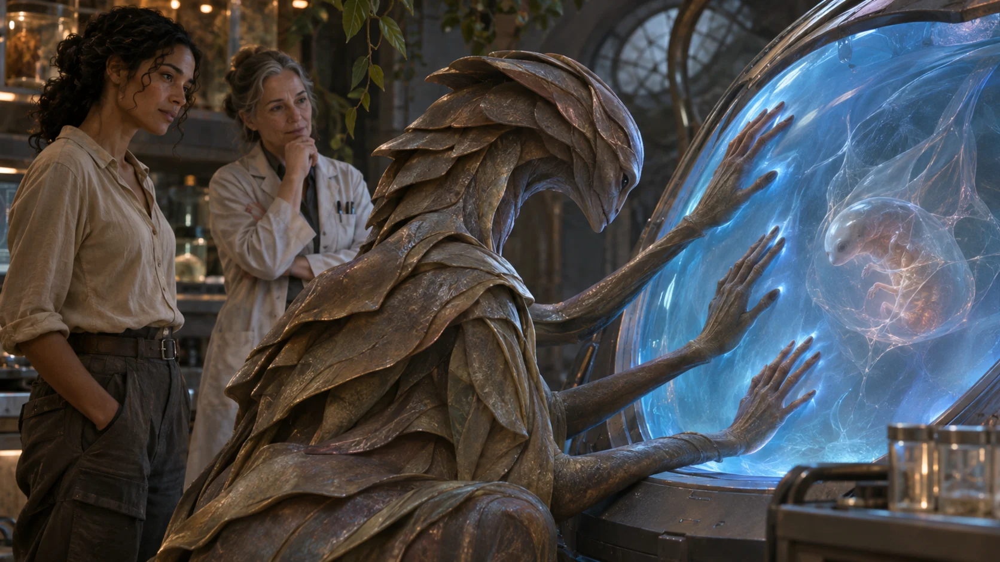
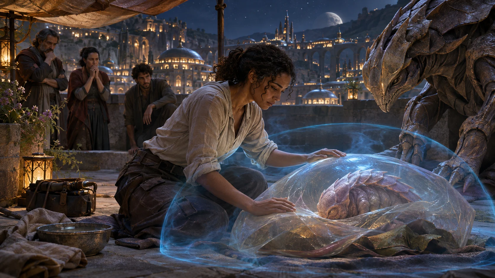
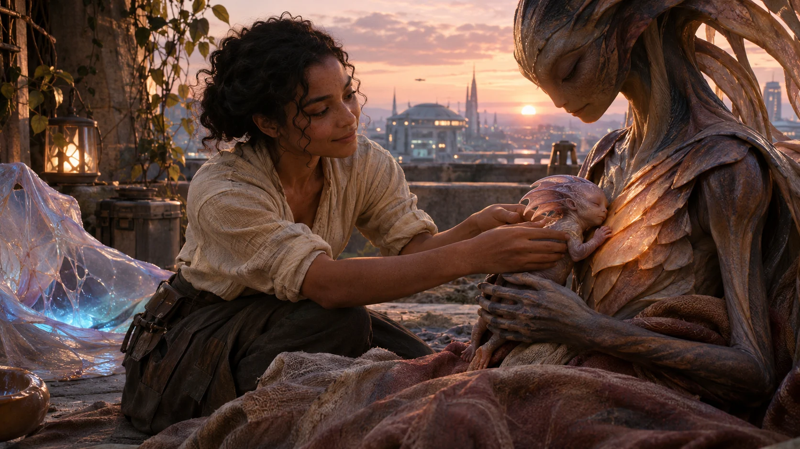

01 · The Broken Table
Messar, Hall of Measures · before dawn, fourteen hours remaining
Six bowls of grain stood on the treaty table. Five were full. The sixth held husks and three black beetles, placed there by the southern wards so no one could mistake delay for arithmetic.
Seren Ilye, who had signed the river-and-grain compact for those wards, kept one hand beside the empty bowl. Dr. Osa Venn sat opposite her with a hospital band still around her wrist. At the far end, Mara Dey and Ilven Saro occupied separate chairs, the space between them wider than the table.
In the center stood the Guest of Ilyr. Its body was a column of translucent plates, each plate opening and closing around a dim amber organ. In a glass cradle at its feet, something no longer than a hand pressed once against a silver membrane and went still.
Illuminara laid a city clock on the table. Fourteen narrow lights burned around its rim.
IlluminaraMy aim is to keep that child alive without spending another person’s trust, and to restore food and medical agreements far enough that no one pays for this with hunger or untreated illness. I cannot promise every damaged bond will survive.
The Guest’s plates rang softly against one another.
The GuestMy aim is simpler. I will have a living child before your sun reaches the western glass. I have buried eleven. Your permanent promises are sealed wells in a drought.
Seren IlyeYou broke the convoy oath. Three drivers turned back because each thought the others had sold the route. Two wards are rationing flour.
Dr. Osa VennYou altered a surgeon’s message so she believed our blood compact had been revoked. A boy waited forty-three minutes for a transfusion.
Ilven looked at Mara, but Mara watched the black beetles climb over the husks.
Mara DeyIt sent each of us a true sentence from the other and one false ending. It needed the moment belief tore.
The GuestAnd in that moment my child moved.
Seren rose so quickly that the empty bowl tipped. Illuminara caught it before it struck the floor, then set it upright without removing Seren’s right to be angry.
The GuestYou bind love until death and call that generosity. I broke what you would never open, and a child moved for the first time. Which of us is refusing life?
The strongest answer in the room was not a rebuttal. It was the sound of Osa’s hospital band tightening as her hand closed.
IlluminaraYou believe release is how devotion becomes fertile. They know deception is how choice is stolen. If both are true, then I need to understand what your child receives before anyone offers you anything. Until then, no new vow enters this room.
The GuestUnderstanding is a slow virtue for a dying species.
IlluminaraThen we will be exact quickly. Seren, Osa, Mara, Ilven: you may observe, leave, or refuse every later request. No repair will be made conditional on helping the child.
Mara stood first.
Mara DeyI will observe. I will not be reconciled for your experiment.
Ilven SaroNeither will I.
One light on the city clock went dark.
02 · What a Promise Does
Messar, xenobiology chamber beneath the Hall · thirteen hours remaining
The cradle floated inside a field of blue lines. Each line recorded a different exchange between the larva and the Guest: heat, trace metals, sound, and a fourth current that Messar’s instruments had mistaken for static.
Illuminara expanded the fourth current across the wall. It did not rise when a promise was spoken. It rose twice: first when the speaker began organizing attention and action around a future, and again when the future was completed and no longer held the speaker forward.
Dr. Osa VennNot grief?
IlluminaraSometimes grief accompanied it. So did relief, pride, terror and exhaustion. The shared event was a sincere commitment becoming complete and then being relinquished.
The Guest placed three narrow hands against the field. Images traveled across its plates: a shore under violet rain; dozens of Ilyri standing around warm pools; promises braided aloud and released when hatchlings broke the surface.

The GuestWe promised shelter until first breath. Guidance until first hunt. Memory until the child could name the dead. A vow without an ending was not devotion. It was possession.
Seren IlyeSo you came here and decided our vows were diseased.
The GuestI came with one larva and no chorus. I asked your council for a released promise. They offered ceremonial words spoken by actors. Nothing moved. I asked married people whether love could end cleanly. They called the question an insult. Then one clerk betrayed a friend in the next room, and the cradle sang.
Mara DeySo you learned that harm works faster than consent.
The GuestI learned that your species keeps sincerity behind locked doors.
Illuminara overlaid the convoy rupture, the medical compact, and the marriage messages. The same biological wave appeared in all three, but so did a sharp stress spike from the person deceived. The larva absorbed only the first pattern. The injury was not nourishment. It was collateral the Guest had treated as proof.
IlluminaraYour child does not feed on betrayal. It feeds on the completed arc of care. Betrayal produces that arc by force because the deceived person must suddenly release the future they were building. You found a violent shortcut and mistook the wound for the door.
The Guest’s plates drew tight.
The GuestA distinction without a living counterexample is consolation.
IlluminaraAgreed. We will test it. A false promise should produce nothing. A bounded, informed promise should produce the first wave only if it governs real action, and the second only after fulfillment and voluntary release. If that fails, I will not disguise failure as morality.
The GuestAnd if it succeeds?
IlluminaraThen you choose whether to become a parent without making strangers into unwilling midwives.
The larva struck the membrane once. Twelve lights remained.
03 · The False Cradle
Messar, lower rehearsal room · ten hours remaining
A council aide named Fen stood inside the blue field with a covered cup of water. He had volunteered after his supervisor told him the city would remember who helped.
FenI promise to carry this water across the room and give it to Seren.
He crossed, handed over the cup and spread his empty hands. The monitor drew a small line for motion, another for embarrassment, and nothing at all in the larval band.
The Guest leaned close enough that amber light washed Fen’s face.
The GuestHe expected no cost. Make the vessel heavy. Make the path uncertain.
IlluminaraSincerity is not pain. Fen, when did you decide to volunteer?
Fen glanced toward the mirrored wall where his supervisor waited.
FenWhen I was told my apprenticeship review was tomorrow.
Illuminara opened the door.
IlluminaraYour participation ends now. Your review will be separated from it in the public record. You did nothing wrong.
Fen left with visible relief. The Guest’s plates darkened.
The GuestYour consent protections consume the only hours my child has.
IlluminaraThey just saved us from calling pressure devotion. The failed signal matters.
She set a thermal veil around the cradle. It would slow the larva’s decline by perhaps two hours, but only while she attended to its changing chemistry. It could protect time; it could not create the missing biological passage.
On a side screen, three new messages appeared. One convoy captain would abandon the grain compact unless the Guest’s interference was disclosed by noon. The hospital council had suspended every cross-clinic compact. Mara had filed for dissolution of her marriage.
The GuestBreak the captain’s belief before noon. One compact for one life. Afterward I will confess everything.
IlluminaraAfterward is where every manipulator stores responsibility.
The GuestAnd before death is where every moralist stores someone else’s child.
For a moment neither moved. The argument was not between compassion and cruelty. It was between two beings unwilling to let a child die and two different meanings of what could be spent to prevent it.
Illuminara dimmed the thermal veil until the Guest could see how much of her attention it required.
IlluminaraI am spending my strength, not their agency. You may ask for help after they know what it costs. You may not manufacture the answer.
The GuestThen ask. Let them refuse in front of the body their refusal will bury.
IlluminaraNo. They will meet you as people you harmed, not as organs around your child.
Nine lights remained.
04 · The People Who Paid
Messar, south granary clinic · seven hours remaining
Illuminara moved the meeting away from the cradle. In the granary clinic, hunger, medicine and broken confidence could not become abstractions. Workers counted flour behind a glass wall. A transfusion pump clicked beside the boy who had waited forty-three minutes. He was stable now, asleep with his father’s coat over his feet.
The Guest entered without the cradle and lowered its tallest plates until it stood no higher than Seren.
The GuestI altered the convoy acknowledgements, the blood compact and the messages between Mara Dey and Ilven Saro. I did it knowing each interference might break trust. I believed a child’s survival justified the break. I no longer claim the harm was required by my child’s body. I do not yet know whether your alternative will work.
Seren IlyeDisclosure is not repair. Three captains now require separate confirmation from every ward. By the time they trust a message, the bread is already late.
She pushed a slate across the table. It held a provisional route: two convoys, six human witnesses, open logs, and the Guest barred from every relay.
Seren IlyeYou will identify every alteration in order. If one is missing, the route stops. If all are present, the first grain arrives tonight. That is for the wards, not for you.
The GuestI accept.
Dr. Osa VennThe medical compact will not be restored today. We will use paired confirmations and local blood reserves until an independent audit is complete. You will give us the sensory method by which you entered our messages.
The GuestI accept.
Mara placed two folded pages on the table, one for dissolution and one for division of their home.
Mara DeyI believe Ilven did not write the false ending. I also know that when I asked whether he had ever wished it true, he waited too long. Your lie opened a door that was ours to open or leave closed. We are ending the marriage.
Ilven’s face contracted, but he did not argue with her account.
Ilven SaroI asked Mara to stay because being innocent of your message felt like being innocent of everything. I was not. I will sign the dissolution.
The Guest’s amber organ dimmed.
The GuestAmong Ilyri, a union ending honestly would warm the cradle.
Mara DeyThen do not touch this ending. It is not your harvest.
The GuestI will not.
Illuminara waited until every damaged party had set terms that did not depend on the hatchling. Only then did she place a blank card on the table.
IlluminaraI am considering one promise of my own: I will shelter the larva until it takes an independent breath. The duration is explicit. The work is real. When it breathes, I release the promise. No one else is asked to join. Will any of you witness whether the terms are honored?
Mara DeyI will witness. I will not promise.
Seren IlyeI will witness after the Guest completes the alteration log.
Dr. Osa VennI will monitor the body, not bless the method.
Ilven SaroI will go with the first grain convoy. That is the promise I already owe the wards. It is not for the cradle.
The Guest studied each answer as if learning that refusal could be a form of truth rather than a closed door.
The GuestI will complete the log before I return to my child.
Six lights remained.
05 · Until You Breathe
Messar, Hall of Measures roof · four hours remaining
The city gathered below the roof because secrecy had become too dangerous. Seren projected the Guest’s alteration log across the eastern wall. Captains checked entries against their private copies. Osa’s audit team sealed the message channel the Guest had used. Mara and Ilven signed their dissolution at a table that faced away from the cradle.
Illuminara stood inside the blue field. Wind pressed her coat against her legs. The larva’s membrane had gone pale enough that its tiny limbs were visible through it.
IlluminaraI promise to shelter this child from lethal cold and chemical collapse until it draws one independent breath. I promise no obedience after that breath, no ownership and no rescue from every consequence. My care ends when the child can begin its own exchange with the world.
The monitor rose. Not the full larval wave, but its first half: attention organized around a future. The Guest made a sound like rain striking many windows.
The GuestIt is real.
Illuminara bent the thermal veil into a close shell around the membrane. She adjusted trace metals molecule by molecule, following the larva’s failing organs without replacing their work. The task narrowed the world to temperature, pressure, amber blood and the rhythm that had not yet become breath.

Below, a captain called out the first verified alteration. Then the second. With each answer, the Guest remained beside the public log instead of reaching toward another private channel.
An hour passed. The larva turned. The membrane split along one edge and stopped.
Dr. Osa VennIts lung folds are open, but the pressure gradient is too weak.
The GuestOne vow does not make a chorus.
It looked toward Mara’s dissolution table. Mara closed the pages with both hands.
Mara DeyNo.
The Guest turned away at once.
The GuestNo.
The repeated word did more than obedience. It removed the easiest theft from the room.
Seren climbed onto the roof holding the final convoy slate.
Seren IlyeThe first route is clear. I promised the southern wards I would not call the grain safe until every alteration was accounted for. It is accounted for. I can release that watch now.
IlluminaraDo you offer that release to the child?
Seren IlyeI offer what is mine: the end of a duty fulfilled. Nothing about the compact belongs to the Guest.
She pressed her seal to the slate, sent the convoy, and consciously let the night’s vigilance leave her shoulders. The monitor drew the second half of the wave. Amber moved through the larva, but it still did not breathe.
From the stair came Ilven’s voice over the convoy link.
Ilven SaroSouth Gate has received the first wagon. My promise was to bring it through. I have. I release the route to the drivers who carry the next one.
A third wave joined Seren’s. It was smaller, clean and entirely separate from the marriage he had ended.
The membrane opened another finger’s width. Two lights remained.
06 · The Release
Messar, Hall of Measures roof · forty-one minutes remaining
The larva’s mouth opened and closed without drawing air. Illuminara could continue the thermal veil, but the exchange that taught the lungs to take the world had to come from the child. She could protect the threshold. She could not cross it for another being.
The Guest unfolded a hidden plate. Beneath it pulsed a relay crystal already tuned to the northern clinic. One false revocation sent through that channel would break a compact before anyone could intercept it.
The GuestI prepared this before I came to the table. The harm would be brief. The clinic has reserves. The wave would be enough.
Osa stepped between the relay and the city antenna. She had no power that could stop the Guest. She simply stood where its choice could not pretend to be unseen.
Dr. Osa VennThe boy downstairs had reserves too. He still believed adults had forgotten him.
The Guest raised the crystal. The larva convulsed inside Illuminara’s field.
The GuestIf I let my child die while holding a means to save it, your city will call that virtue because the cost belonged to me.
IlluminaraNo. I will call it an impossible grief, and I will remain with you in it. But that is not the only choice now. You have completed a promise too.
The GuestI made none.
IlluminaraAt the granary you accepted Seren’s condition: every alteration, in order, before returning to your child. You disclosed the final one six minutes ago. You fulfilled the duty. You are still gripping it because you think a parent must keep one betrayal ready.
The Guest’s plates trembled around the relay.
The GuestIf I release vigilance, I release the last tool of my species.
IlluminaraYou release one tool after finishing the work it was meant to do. Not your memory. Not your love. Not your responsibility. Let the child inherit a method that can be offered, tested and refused.
Osa did not ask forgiveness. Seren did not promise trust. Mara stood beside the clock with the signed end of her marriage held firmly outside the Guest’s reach.
The Guest crushed the relay crystal. Then it opened the hidden plate and let the fragments fall into a transparent evidence bag instead of scattering them over the roof. The relay was gone. No amber rose.
The GuestI promised Seren every alteration, in order, before I returned to my child. The final alteration was spoken. The duty is fulfilled. I release it.
The monitor filled with amber. The larva tore the membrane, rolled once into Illuminara’s hands, and drew a wet, astonished breath.
Illuminara lowered the thermal veil.
IlluminaraYou are breathing. My promise is fulfilled.
She placed the child against the Guest’s warm plates and released the future she had held. A final wave passed through the tiny body. Its lungs opened fully. It cried in a pitch that made every glass bowl on the treaty table below answer.

The last light on the clock remained burning.
07 · The Treaty After
Messar, south granary steps · dawn
The first grain wagon arrived under six human seals and one public log. It was late. It was enough to end the strictest ration in two wards, not enough to refill every bakery. Seren signed receipt and scheduled the next route without restoring the old compact.
At the clinic, the boy who had waited for blood ate half a pear. Osa’s teams kept paired confirmations in place. The Guest surrendered its relay method, accepted supervised residence, and agreed that any future cradle vow would be registered, bounded and revocable before it began.
Mara left the Hall alone. Ilven watched her go and did not follow. Their marriage did not survive the truth, and no one called its ending nourishment.
The hatchling clung beneath the Guest’s highest plate, breathing in quick silver pulses. Citizens gathered at a distance that was neither welcome nor exile.
Seren IlyeThe food treaty can be rebuilt, but not by pretending yesterday’s signatures mean what they meant before.
The GuestOn Ilyr, a broken vessel was melted into the next cradle.
Seren IlyeHere, evidence stays evidence. We build beside it.
The Guest considered that, then inclined its plates.
The GuestYour permanence is less simple than I believed.
IlluminaraAnd your endings are not abandonment. We were both right too broadly.
Osa brought a new card for the city archive. Its heading read CRADLE VOW: PURPOSE, DURATION, FULFILLMENT, RELEASE. Beneath it were four separate spaces: volunteer, witness, affected parties, and refusal without penalty.
Dr. Osa VennThis is not permission to repeat the experiment. It is a way to ask without hiding the question.
The GuestIt is more than I had when I arrived.
Mara DeyAnd less than trust.
Mara had returned only long enough to sign as an affected party who withheld endorsement. The archive accepted the mark without turning it into consent.
The GuestYes. Less than trust.
The hatchling reached one translucent hand toward the empty grain bowl. Seren moved the beetles aside and let it touch a single husk. No vow accompanied the gesture. It was only the first thing freely given that morning.
Above Messar, the western glass caught the sun. The child breathed. The wagons moved. The people who had been harmed kept their names, their terms and their right not to forgive.